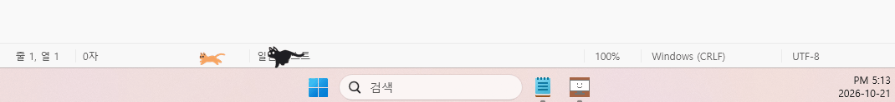
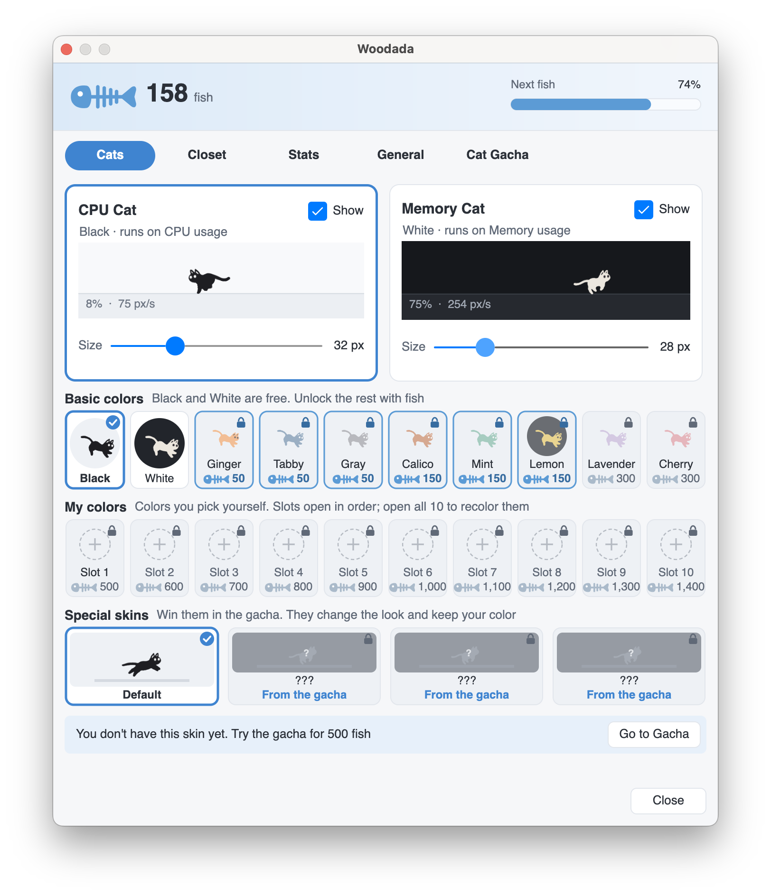

🏃
Faster when your PC is busy바쁠수록 빨라지는 고양이
A CPU cat and a memory cat dash back and forth along your taskbar — or the Dock on a Mac.CPU 고양이와 메모리 고양이가 작업표시줄(맥은 독) 위를 왔다 갔다 달려요.
The busier your computer gets, the faster the cat runs. 컴퓨터가 바쁠수록 고양이도 더 빨리 달려요.
On an Intel Mac? Grab this one. 인텔 맥은 여기에서 받으세요. · Free & open source무료 · 오픈소스 ·
👋 Wiggle your mouse or scroll — the busier you are, the faster the CPU cat runs. Tap a color to dress it up. 👋 마우스를 흔들거나 스크롤해 보세요. 바쁠수록 CPU 고양이가 빨라져요. 색을 눌러 옷도 갈아입혀 보세요.
What it does이런 앱이에요
A CPU cat and a memory cat dash back and forth along your taskbar — or the Dock on a Mac.CPU 고양이와 메모리 고양이가 작업표시줄(맥은 독) 위를 왔다 갔다 달려요.
The more they run, the more fish you collect. Spend them on new colors and new friends.고양이가 달리면 생선이 쌓이고, 생선으로 새 색과 새 친구를 데려와요.
Pick from 20 colors for each cat — or mix your own — and change its size.고양이마다 색 20가지 중에 고르거나 직접 섞고, 크기도 바꿀 수 있어요.
Distance uses your monitor's real size, so you'll see things like “1.2 km today”.모니터 실제 크기로 계산해 “오늘 1.2 km 달렸어요”처럼 알려 줘요.
Clicks pass right through the cats, and they hide on their own in full-screen games and slides.고양이 위를 클릭해도 아래 창이 그대로 눌리고, 게임·발표처럼 전체 화면일 땐 알아서 숨어요.
When a new version comes out, Woodada quietly updates itself.새 버전이 나오면 스스로 조용히 업데이트해요.
On a real taskbar실제 작업표시줄에서


Click the cat in your system tray (or menu bar) to open the settings.트레이(맥은 메뉴 막대)의 고양이 아이콘을 누르면 설정이 열려요.
🎰 Cat Gacha냥뽑기
Special skins change how your cat looks and keep the color you picked. They're running live below.스페셜 스킨은 고른 색은 그대로 두고 모습만 바꿔요. 아래에서 실제로 달리고 있어요.
Floats along with a see-through, softly glowing body.반투명하게 빛나는 몸으로 둥실둥실 떠다녀요.
Leaves afterimages behind. The faster it runs, the longer the trail — and it heats up red.지나온 길에 잔상을 남겨요. 빠를수록 꼬리가 길어지고 몸이 빨갛게 달아올라요.
Every now and then it flickers like a broken screen.가끔 화면이 고장 난 것처럼 지지직거려요.
A dachshund and a rabbit will be joining the run soon.닥스훈트와 토끼도 곧 함께 달릴 예정이에요. 🐕 🐇
Install설치
Woodada.exe.Woodada.exe를 받아요.If you see “Windows protected your PC”, click More info → Run anyway. Automatic updates won't work from folders that need admin rights, like Program Files.“Windows의 PC 보호” 창이 뜨면 추가 정보 → 실행을 누르세요. Program Files처럼 권한이 필요한 폴더에 두면 자동 업데이트가 되지 않아요.
.dmg for Apple Silicon or Intel.Apple 실리콘이나 인텔용 .dmg를 받아요..dmg를 열고 Woodada를 응용 프로그램 폴더로 끌어다 놓아요.If macOS warns about an “unidentified developer”, go to System Settings → Privacy & Security and click Open Anyway. You only need to do this once.처음 열 때 “확인되지 않은 개발자” 경고가 뜨면 시스템 설정 → 개인정보 보호 및 보안에서 그래도 열기를 누르세요. 한 번만 하면 돼요.
FAQ
Yes. Turn on Start with Windows (or Open at Login on a Mac) from the tray or menu bar icon.네. 트레이(맥은 메뉴 막대) 아이콘 메뉴에서 Windows 시작 시 실행(맥은 로그인 시 실행)을 켜 주세요.
You don't have to. The app checks for a new version on its own and swaps it in.할 필요 없어요. 앱이 알아서 새 버전을 확인하고 바꿔 끼워요.
Pick which monitor the cats run on in the General tab. They follow your taskbar whether it's at the top, bottom, left or right.설정의 일반 탭에서 고양이가 달릴 모니터를 고를 수 있어요. 작업표시줄이 위·아래·왼쪽·오른쪽 어디에 있어도 따라 달려요.
If the Dock is hidden or on the side, the cats run along the bottom of the screen instead.독이 숨어 있거나 옆에 있으면 화면 바닥을 따라 달려요.
No. It only reads how busy your CPU and memory are and draws a few small frames — it's open source, so you can check.아니요. CPU와 메모리가 얼마나 바쁜지 읽어서 작은 그림 몇 장을 그릴 뿐이에요. 오픈소스라 직접 확인할 수도 있어요.
Windows — Quit from the tray icon, then delete Woodada.exe. To erase your records too, delete %APPDATA%\Woodada.
macOS — Quit from the menu bar icon, then move Woodada to the Trash. Your records are in ~/Library/Application Support/Woodada.
Windows — 트레이 아이콘에서 종료한 뒤 Woodada.exe를 지우세요. 기록까지 지우려면 %APPDATA%\Woodada 폴더도 지우면 돼요.
macOS — 메뉴 막대 아이콘에서 종료한 뒤 Woodada를 휴지통에 버리세요. 기록은 ~/Library/Application Support/Woodada에 있어요.